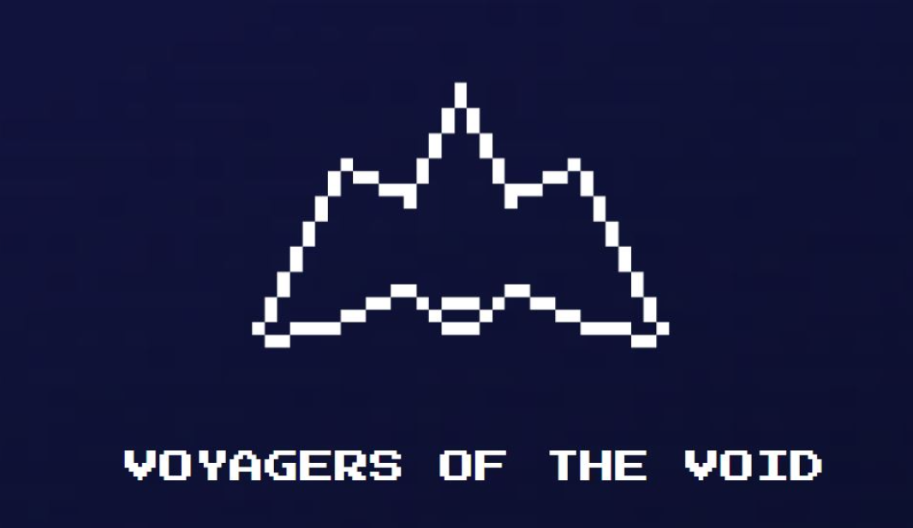

About This Project
Voyagers of the Void is an interstellar adventure where players take on the roles of courageous explorers,
navigating through the emptiness of space. As they travel, players must gather resources, upgrade their ships, and strategically
manage their limited supplies of health, food, and energy. The objective is to reach checkpoints and complete the journey without
running out of essential resources.
This board game emphasizes strategic thinking and resource management while immersing players in a space exploration theme.
Every decision counts, and the choices players make can be the difference between a successful voyage or being stranded in the void.

How It Works
Players begin their journey with a basic ship and limited resources. As they progress, they must:
- Gather Resources: Explore planets, asteroids, and space stations to gather critical resources.
- Upgrade Ships: Use collected resources to improve their ship's capabilities, such as increasing cargo space or improving engine efficiency.
- Navigate the Void: Make strategic decisions on which paths to take, considering potential risks and rewards.
- Survive Checkpoints: Reach designated checkpoints before running out of health, food, or energy.
Development Details
Date Created: Friday, October 4th, 2024
Platform: The game is available as a physical board game and can also be downloaded via Itch.io.
How to Play
- Set Up: Arrange the board, distribute player pieces, and deal starting resources.
- Gameplay: Each player takes turns exploring, gathering resources, and upgrading their ships.
- Objective: Strategically navigate the board to reach the final destination before running out of resources.
- Challenges: Random events, such as asteroid fields or resource shortages, create dynamic and engaging gameplay.
Technologies and Tools
For the digital version of this board game, I used the following:
- Dextrous: For creating the deck of cards for the game.
- Illustration Tools: Photoshop and Illustrator for designing the board and pieces.
- Playtesting: Conducted multiple playtesting sessions to refine the mechanics and balance the gameplay.